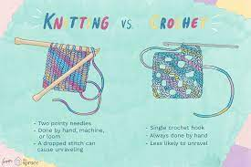

I make handmade crochet items. One of my favorite thing to crochet are summer tops, but I make everything from hats, scarves, tank tops, sweaters, cardigans, stuffed animals, and flowers.
Since many people do not know the difference between knitting and crocheting I'm going to tell you. Knitting uses a pair of long needles to forms loops, and you move these loops from one needle to the other; the stitches are held on the needle. While crochet uses a single hook, and the loops are held together as a piece, and not on the hook directly keeping it together.